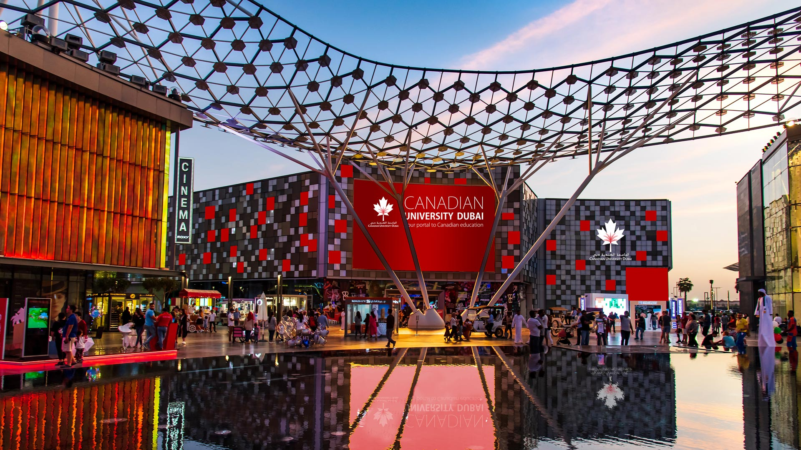

ABOUT US

Quick facts
1)Ranked in the top 2% (601-650) worldwide and top 4 in the UAE (QS World University Rankings 2022)
2)50+ international academic partners
3)40+ accredited programs & concentrations
4)120+ student nationalities joined.
5)International Program Accreditation/Certification: CIMA, CFA, ACCA, IAA, PRSA, PRME, ECO Canada, & SHRM
A Canadian education in the heart of Dubai
Canadian University Dubai (CUD) offers undergraduate and graduate degree programs based on a world-leading international curriculum. Located in the city’s vibrant business district, CUD gives students the unique opportunity to obtain a first-class Canadian education while experiencing the dynamic lifestyle of Dubai, United Arab Emirates.
A gateway to life in Canada
Each of our academic programs offers the option to start your higher education in Dubai, then transfer with credit to one of our Canadian or other international partners. Studying at CUD provides a gateway for students to pursue higher education, research, and employment opportunities in Canada.
A reputation for academic excellence
We collaborate with our Canadian partner institutions to develop world-class curricula, and our international faculty are leaders in their field. We deliver a wide range of undergraduate and graduate programs across disciplines in Architecture & Interior Design; Communication and Media; Engineering, Applied Science and Technology; Management; Creative Industries; Environmental Health Sciences; and Social Sciences, including Psychology and Applied Sociology.
A practice-based learning approach
Our industry-informed programs focus on critical work-related skills to give graduates a head-start in the UAE’s growing knowledge economy. We offer students unique opportunities to collaborate with senior faculty on applied research projects and to explore innovation and entrepreneurship through our student business incubator.
An outstanding student experience
Our diverse campus community represents over 120 different nationalities, and our vibrant student life ensures that every one of our graduates is equipped with the skills and experiences of global citizenship required to excel in the modern business world.
GO TO TOP